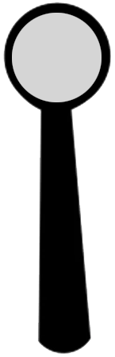
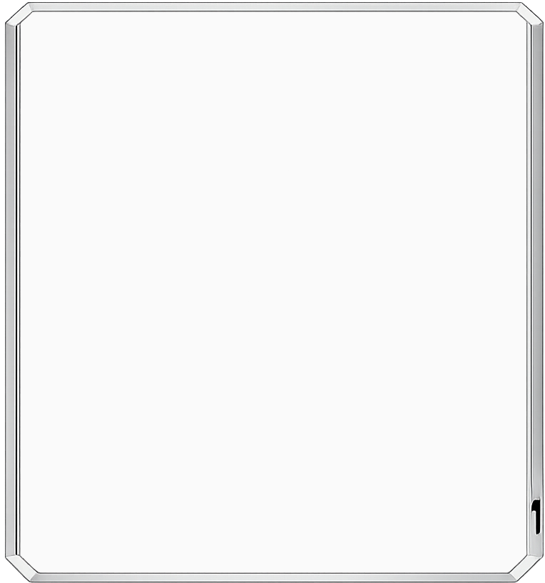

Department of Pediatric Ophthalmology & Adult Strabismus
Aravind Eye Hospital & Postgraduate Institute of Ophthalmology
An interactive diagnostic simulation tool for clinical training, cover-uncover testing, and prism alignment evaluation.

